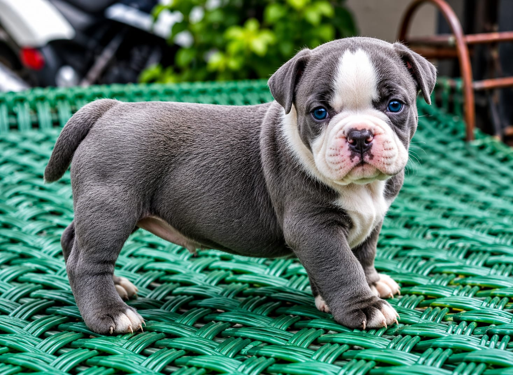

Estos son algunos de nuestros amigos que esperan una familia responsable y llena de amor.
Edad: 1 año
Raza: Azul ruso
Edad: 6 meses
Raza: Labrador
Edad: 2 años
Tamaño: Mediano
Raza: Hamster Roborowski
Raza: Hamster Sirio

Edad: 4 meses
Raza: Bulldog americano
Tipo: Hamster
Edad: 8 meses
Tamaño: Pequeña
Tamaño: Grande
Escoge el animal que deseas adoptar.
Completa el formulario de solicitud.
Realizamos una entrevista básica.
Entrega y seguimiento responsable.